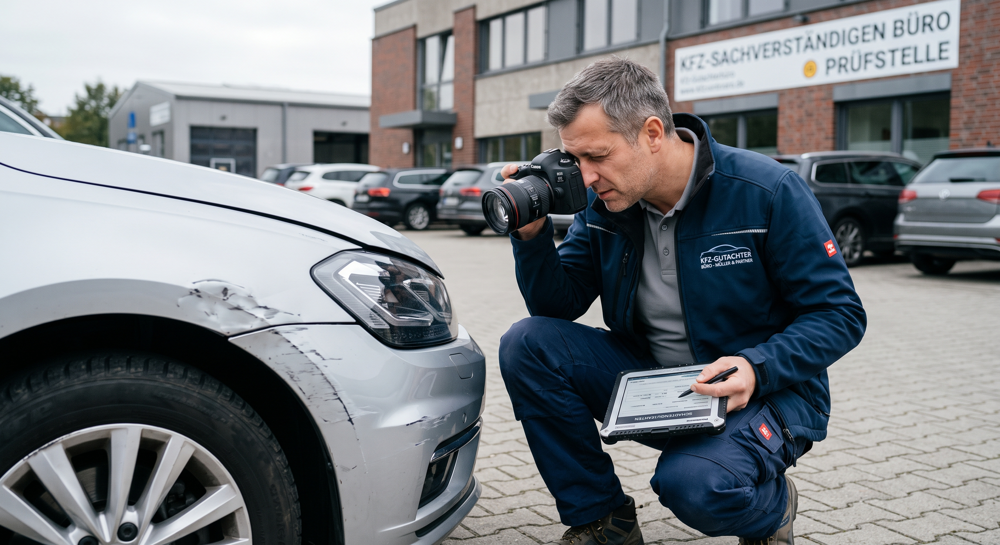

100% kostenfrei für Sie
Bei einem unverschuldeten Unfall übernimmt in der Regel die gegnerische Versicherung die erforderlichen Gutachterkosten.
Ihr unabhängiges Kfz-Gutachten. Kostenlose Vor-Ort-Aufnahme innerhalb von 2 Stunden. Die gegnerische Versicherung zahlt unsere Kosten.
*Platzhalter-Angabe – bitte vor Veröffentlichung verifizieren.

≤ 2 Std.
Vor-Ort-Termin
30–45
Minuten Aufnahme
24/7
Erreichbarkeit
Ihre Ansprüche im Blick
Ein unabhängiges Gutachten stärkt Ihre Position bei der Schadensregulierung.
Bei einem unverschuldeten Unfall übernimmt in der Regel die gegnerische Versicherung die erforderlichen Gutachterkosten.
Wir kommen zu Ihnen nach Hause, an Ihren Arbeitsplatz oder direkt in die Werkstatt.
Wir dokumentieren den Schaden sorgfältig – inklusive möglicher Wertminderung und Nutzungsausfall.
Die Kostenübernahme hängt von Haftung und Einzelfall ab. Bei Teilschuld, Bagatellschäden oder unklarer Haftung beraten wir Sie vorab.
Expertise & Vertrauen
Höchste technische Präzision bei der Schadensbewertung. Geführt von einem Kfz-Mechaniker-Meister mit einem Master of Science (M.Sc.) in Maschinenbau und rund 10 Jahren Erfahrung im anspruchsvollen Automotive Engineering für einen führenden Entwicklungsdienstleister. Hier wird kein Schaden übersehen.
Fundierte technische Qualifikation
Unabhängige Schadenbewertung
Einfach & unkompliziert
Wir klären die wichtigsten Fragen und finden zeitnah einen passenden Termin.
Die sorgfältige Fahrzeugaufnahme dauert etwa 30–45 Minuten.
Sie erhalten Ihr Gutachten; auf Wunsch geht es direkt an Ihren Anwalt.
Gut zu wissen
Wir sind für Sie da
Schildern Sie uns kurz Ihre Situation. Wir melden uns schnellstmöglich bei Ihnen zurück.
24/7 Notfall-Erreichbarkeit
Rückrufzeiten nach Verfügbarkeit; bei dringenden Fällen bitte anrufen.